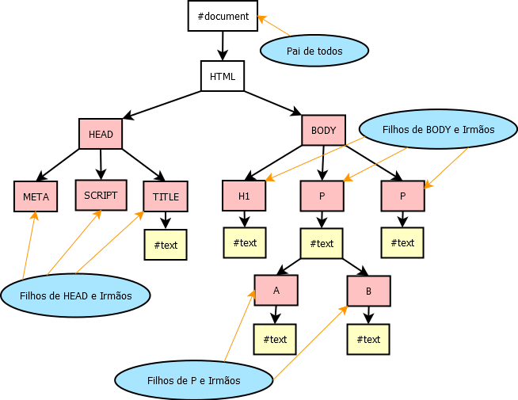

- JPG/JPEG
- Formato utilizado para fotos em geral, com milhões de cores
- GIF
- Formato com menos cores, voltado para desenhos, ilustrações, suporta animações e transparencia.
- PNG
- Utilizado para fotes, com milhões de cores, suporta transparencia e é mais compacto.
- WEBP
- Formato mais moderno, com suporte a milhões de cores, transparencia mantendo a compactação.
- SVG
- Formato vetorial, não tem problema com redimensionamento, muito comum para logotipos e desenhos.
Exemplos:
Banda Pink Floyd

Imagens dentro de outras imagens




Imagens (ou ilustrações) com legenda

Exemplo: tutorial do JavaScript
(nota1, nota2) => (nota1 + nota2)/2
WebP vs JPEG


Formato vetor para a web: SVG